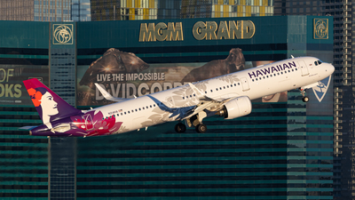

The aviation industry is a crucial component of the global economy, significantly influencing international trade, tourism, and economic development. Over the past few decades, the industry has seen remarkable advancements, including the development of more fuel-efficient aircraft, enhanced safety measures, and innovations in passenger comfort. Airlines now operate under stringent regulations that ensure passenger safety and environmental protection. The industry's growth is driven by a combination of technological advancements and increased demand for air travel. As a result, airlines are continuously evolving to meet the needs of travelers while also addressing challenges such as climate change and economic fluctuations.
Hawaiian Airlines is renowned for its exceptional service, especially on routes connecting the mainland United States to the Hawaiian Islands. Established in 1929, it is one of the oldest carriers in the U.S. and has built a reputation for offering a unique Hawaiian experience with its warm hospitality and island-inspired in-flight services. The airline focuses on providing a seamless travel experience for passengers, whether they are traveling for leisure or business. Its commitment to maintaining high standards of service has earned it numerous awards and high customer satisfaction ratings. Hawaiian Airlines is also known for its environmental initiatives, including efforts to reduce carbon emissions and support local communities.
JetBlue Airways has transformed the low-cost airline model by combining affordability with quality service. Founded in 1998, JetBlue quickly became known for its comfortable seating, free in-flight entertainment, and complimentary snacks and beverages. The airline's focus on customer service and innovation has set it apart from other low-cost carriers. JetBlue offers a range of amenities that include extra legroom and free Wi-Fi, which are often found in more premium services. The airline's commitment to providing a superior passenger experience has made it a popular choice among travelers looking for value and comfort without compromising on quality. JetBlue also places a strong emphasis on operational efficiency and sustainability, making strides in reducing its environmental footprint.
Southwest Airlines, founded in 1967, has become a symbol of customer-focused service in the airline industry. Known for its no-frills approach, Southwest offers low-cost travel with no hidden fees and free checked baggage. Its unique boarding process and open seating policy are designed to provide flexibility and convenience for passengers. The airline's commitment to customer service and its friendly, approachable staff contribute to a positive travel experience. Southwest has also been recognized for its innovative business practices and strong employee culture, which have helped it maintain a loyal customer base. The airline continues to expand its network, offering flights to numerous destinations across the U.S. and international locations, all while maintaining its core values of affordability and service excellence.
For more information, visit the official websites of these airlines:
Hawaiian Airlines Official Site